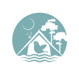

- Как добраться
- Вопросы
- Как добраться

Территория глэмпинга дает огромные возможности для фотографии. Фотосессия в луговых цветах и травах, в полях иван-чая, в лесу и в специально оборудованных зонах.
Река Угра очень популярна для байдарочных маршрутов. Мы регулярно организуем групповые заезды, но можем организовать индивидуальный сплав на байдарках.
Поскольку Угра огибает нашу территорию подковой, можно нырнуть в нее в одном конце нашей территории, проплыть по течению, наслаждаясь пейзажами, и выйти ниже.
Поскольку Угра огибает нашу территорию подковой, можно нырнуть в нее в одном конце нашей территории, проплыть по течению, наслаждаясь пейзажами, и выйти ниже.
Какая же природа без бани. В отдалении от хижин расположена банька. Удовольствие от парения усиливается шикарными видами на лес через панорамные окна. Воздух в парной наполняется испарениями от гималайской солевой панели, запахом липы и тех масел, что вы любите. Отдельно можно заказать теплую кедровую купель.
Каждая хижина оборудована мангально-костровой зоной. Каждый может почувствовать себя повелителем шашлыка! Ну а мы поможем с доставкой фермерского мяса, свежей рыбы и других необходимых продуктов.
Рыбалка на Угре очень популярна. Это объясняется чистой и прозрачной водой, красивой прибрежной зоной и, конечно, большому видовому разнообразию рыб, обитающих в реке.
Отличным времяпрепровождением станет пикник на лугу на берегу реки. Можно взять легкие закуски, напитки и покрывало. Давно ли вы бегали по высокой траве? Когда последний раз смотрели в облака, чтобы отыскать в них животных? В жаркое время можно загорать и купаться, сплавать на другой берег реки или узнать, а что там, на острове?
Собственная территория глэмпинга 49 га, а к нему примыкает еще больший по площади лес. Наша эко-тропа пока в разработке, но уже сейчас можно совершать прогулки по лесу и вдоль реки. Особенностью станет постоянная смена вида растительности. Молодой сосновый лес перемежается симпатичными полянками. Земля в березняке устлана мягкой травой. В густом смешанном лесу царит прохлада. А обратно всегда можно пройти по берегу реки.
На окраине поселка Товарково есть очень длинный пешеходный подвесной мост через реку Угра. Это редкость для центральной части России. Мост раскачивается, а под мостом бурлят пороги. Очень необычные, даже острые ощущения. Заехать к мосту можно по дороге в Полотняный завод или сплавляясь на байдарках по реке Угра.
В живописном природном ландшафте представлена коллекция произведений современного искусства и архитектуры. Все арт-объекты созданы специально для этого места в рамках фестивалей.
Некоторые из них завораживают масштабом и мощью. Рекомендуем провести в парке день, а на ночь возвращаться к нам в глэмпинг чтобы отдохнуть от большого количества людей и впечатлений.
Комплекс посвящен обретению суверенитета Русью от ига Золотой Орды. Посещение сопровождается рассказом гида, поэтому удастся не только что-то увидеть, но и очень многое понять относительного тех давних времен и событий.
Болота – это особая экосистема и огромное биологическое разнообразие. Галкинские болота оборудованы мостками и смотровыми площадками, указателями и поясняющими материалами. С площадки открывается невероятный вид на огромное зелено-желтое болото с островками искрящейся темной воды, бурыми клочками суши, редкими сосенками. Над болотом с криком поднимаются птицы — чайки и цапли. На болотах можно испытать невероятные ощущения от прогулки босиком и покачивания на сплавине. Но лучше это делать в сопровождении экскурсовода.